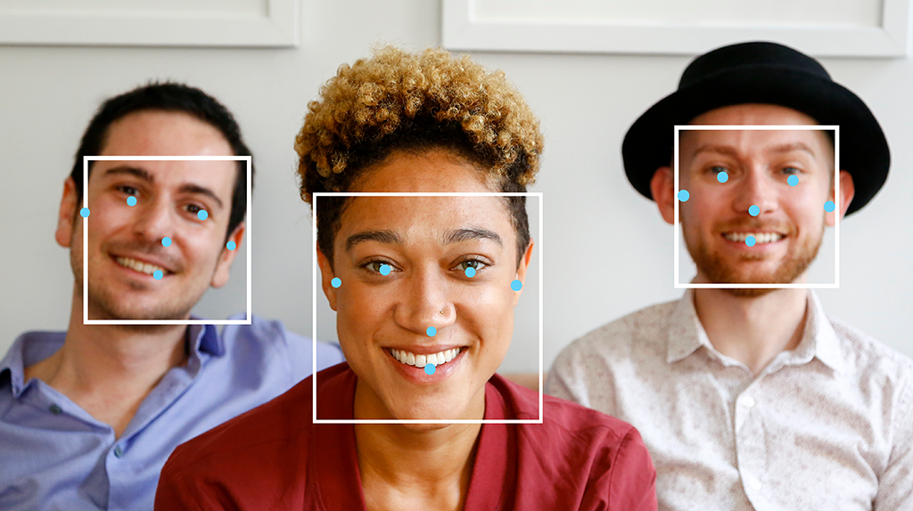
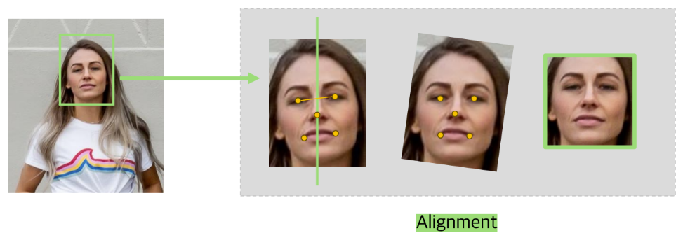

Face Recognition System (November 2024 ~ February 2025)
Client: SECERN AI (in-house R&D)
Affiliation: SECERN AI
In this project, we developed AI models to detect and recognize faces for
ID verification purposes. The system is composed of a face and landmark detection
model and a face recognition model.
The integrated system achieved 97.89% accuracy.

1. Face and Landmark Detection with a Pose Estimation Model
We utilized object detection and pose estimation models to detect faces and
their landmarks, including eyes, nose, and mouth, to achieve higher accuracy.
Among many models, we decided to employ the pose estimation model from YOLOv11 since
it performs face detection and pose estimation simultaneously.
We achieved 98.41% accuracy on this task.

To improve the accuracy and ease of face recognition, we applied image alignment to face images
obtained from the face detection model. This preprocessing step normalizes face orientation
and position for more consistent recognition results.
We developed and tested many different feature extraction models for the backbone and
classification layers for the head of the architecture. Moreover, we experimented with
different loss functions. Finally, we built the model with LResNet for the backbone,
a linear layer for the head, and SubCenter ArcFace for the loss function.
We achieved 98.54% for the accuracy.